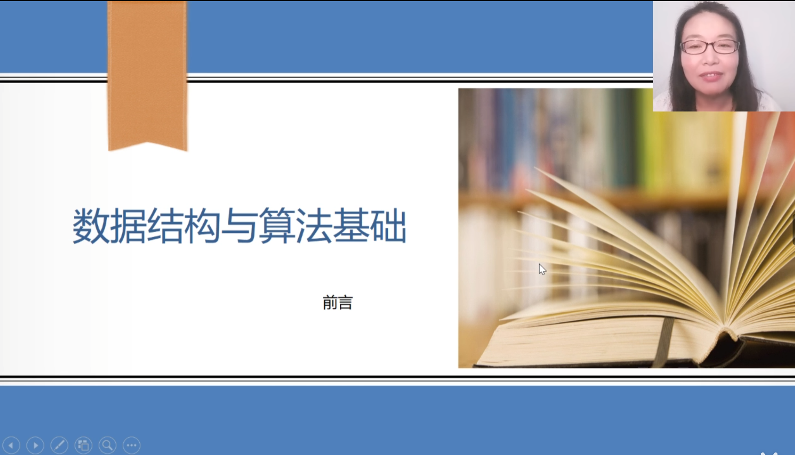

第 4 课：栈与队列
主视频

18:2045:33
AI 问答
我会基于当前视频、课件和字幕回答。你可以问“循环队列为什么要空一个位置？”
栈和队列最核心的区别是什么？
栈是后进先出，队列是先进先出。做题时先看删除端：只在同一端删除通常是栈，从队头删除则是队列。
第 4 讲视频 · 05:18
栈与队列.pptx · 第 3 页
本节资料
MP4
第4讲 栈与队列.mp4
PPT
栈与队列.pptx
SRT
第4讲字幕.srt
本节讲义
4.1 栈的定义与基本操作
栈是一种只允许在一端进行插入和删除的线性表。允许操作的一端称为栈顶，另一端称为栈底。入栈、出栈和取栈顶元素都围绕同一个操作端完成，因此栈天然适合处理需要“最近一步优先返回”的问题。
来源：第4讲 栈与队列.mp4 · 05:18 - 07:42；栈与队列.pptx · 第 3 页
常见应用包括函数调用栈、表达式求值、括号匹配和深度优先搜索。做题时先判断数据进入与离开的方向，如果删除总发生在最新插入元素所在的一端，通常可以抽象为栈。
4.2 队列与循环队列
队列遵循先进先出，插入端称为队尾，删除端称为队头。循环队列通过取模运算复用数组空间，核心问题是判断队满和队空，并保持 front 与 rear 的移动规则一致。
薄弱提示：你在“循环队列长度计算”相关题目中错误率较高，建议重点复习公式。
4.3 本节易错点整理
线性结构题目最容易混淆“逻辑顺序”和“存储位置”。栈与队列的重点不是数组下标本身，而是受限操作带来的访问顺序。遇到循环队列长度题，可先写出通用公式，再代入容量和指针位置。
复习建议：先回看 18:20 之后的循环队列例题，再完成 3 道判空判满专项题。
4.4 课后检查清单
能够口述栈和队列的操作限制；能够根据题意选择栈、普通队列或循环队列；能够解释循环队列空一格的原因；能够用 front、rear 和数组容量计算当前元素个数。
当前讲义基于 3 份资料生成。